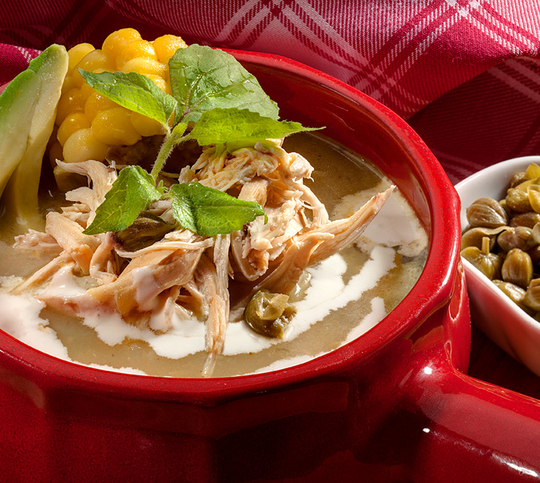

Ajiaco
23 de mayo de 2018
En una olla grande, se saltea en el aceite el pollo en cilantro, ajo, pimienta y sal; cuando dore, se adicionan las mazorcas, la cebolla en rama y luego las papas que se deshacen (papa criolla y pastusa); se añade agua hasta cubrir el pollo (no se exceda en agua), a medida que la papa se cocina puede adicionar más agua; cuando el pollo esté blando, sin pasarse en su cocción, se retira de la olla.
Cuando estén blandos los granos de la mazorca, adicione la papa sabanera, cuidando que no se deshaga, y la mitad de las guascas. Desmeche el pollo retirando la piel y reserve; corte el aguacate en cubos y acompáñelo con la semilla del aguacate para que no se oxide.

Juan: Este articulo me ha ayudado a entender un poco mas de este plato tipico de colombia.
maria: Me gustaria saber un poco mas de la region de donde es este plato tipico.
Carlos: Que gran articulo gracias.
Bandeja paisa
23 de mayo de 2018

Remojar los frijoles en agua hasta cubrirlos la noche anterior a su preparación; cocinarlos en esa misma agua, con la mitad del aceite. Cuando estén blandos, agregarle la sal.
Mientras tanto, sofríe la carne molida en aceite a fuego medio alto añadiendo la mitad del hogao y revuélvelo bien. fríe los chicharrones hasta que queden tostados o al punto deseado.
Cuando los frijoles estén blandos, añade el guiso restante y cocina entre 5 y 10 minutos adicionales para darles espesor. Luego, en una sartén, coloca aceite para freír los plátanos dulces o los patacones y los huevos fritos.
Juan: Bandeja paisa la mejor.